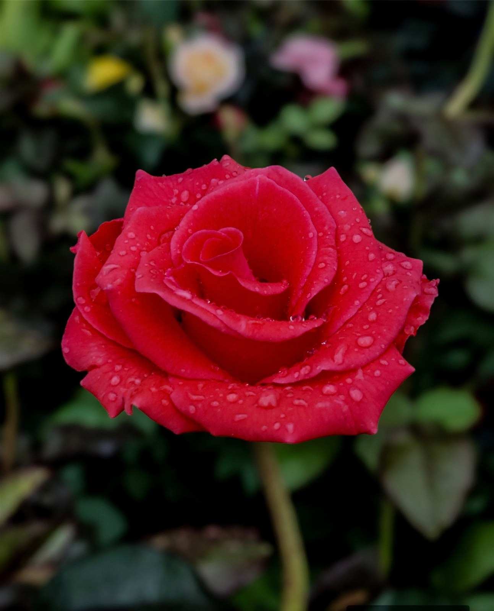
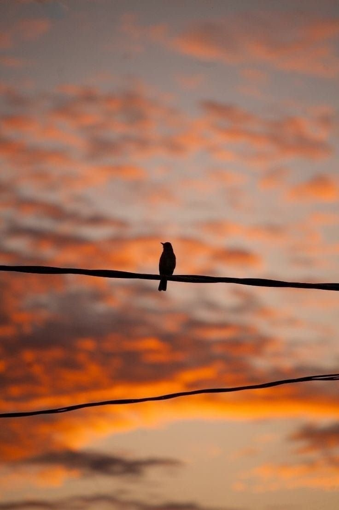
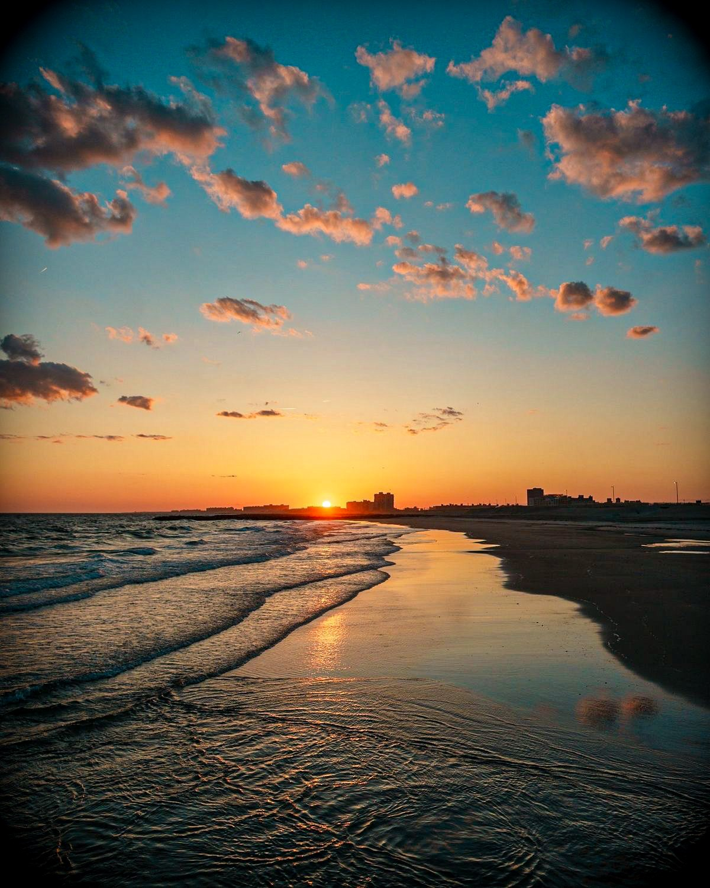
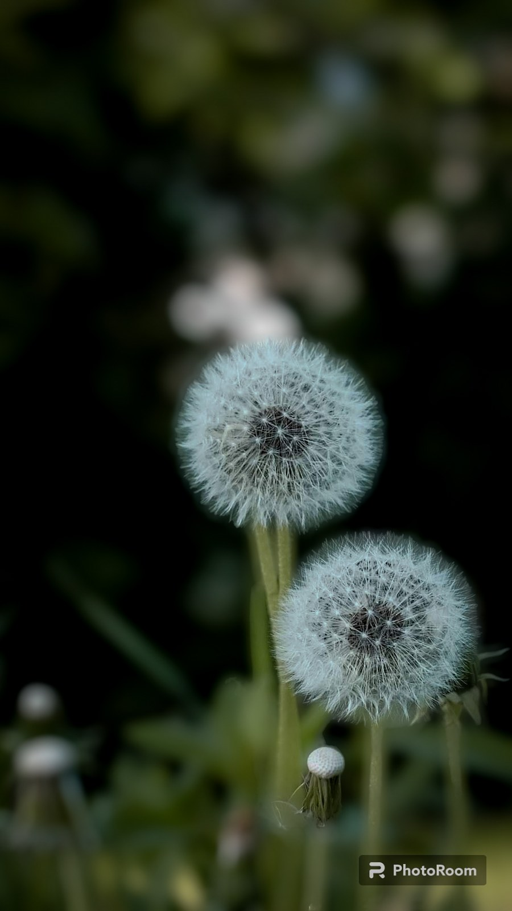
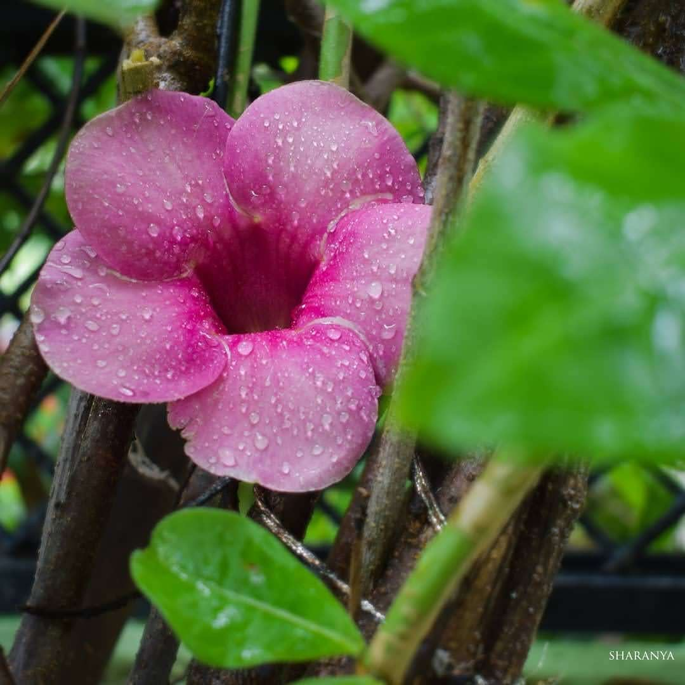
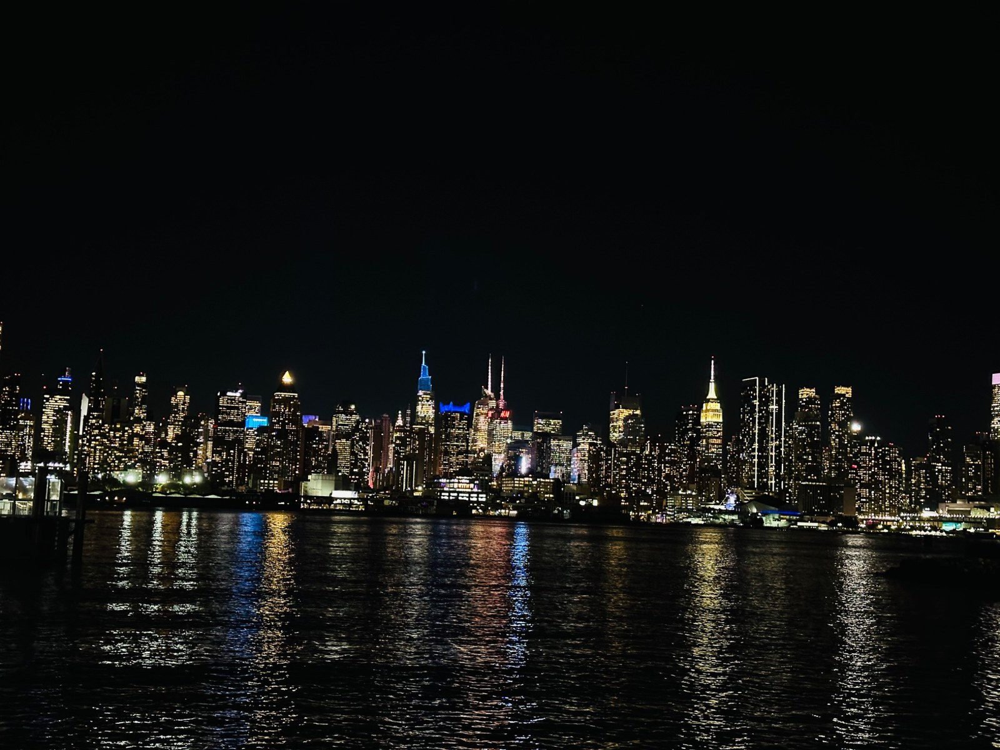

After the Rain
Tiny drops resting on the petals. One of those little details that caught my eye.
A Quiet Light
Just a small flame in a quiet room. Simple, warm and peaceful.
Moon Through the Branches
The moon looked different through the bare branches. I stopped for a moment to capture it.

A Little Pause
One bird, a quiet wire and a sky full of color. Sometimes that is enough.

Where the Sky Meets the Sea
The last light of the day reflecting on the water. A view I wanted to remember.
Autumn Streets
Colors, old buildings and a quiet autumn day. Sometimes the street itself becomes the picture.
Holding Autumn
One leaf carrying so many shades of the season. Small things can be beautiful too.

Ready for the Wind
Soft, delicate and almost ready to disappear. Nature changes quickly.

Fresh After Rain
Rain made the flower look brighter and softer. A simple moment from nature.

City Lights
The city looked completely different after dark. Lights reflected quietly across the water.